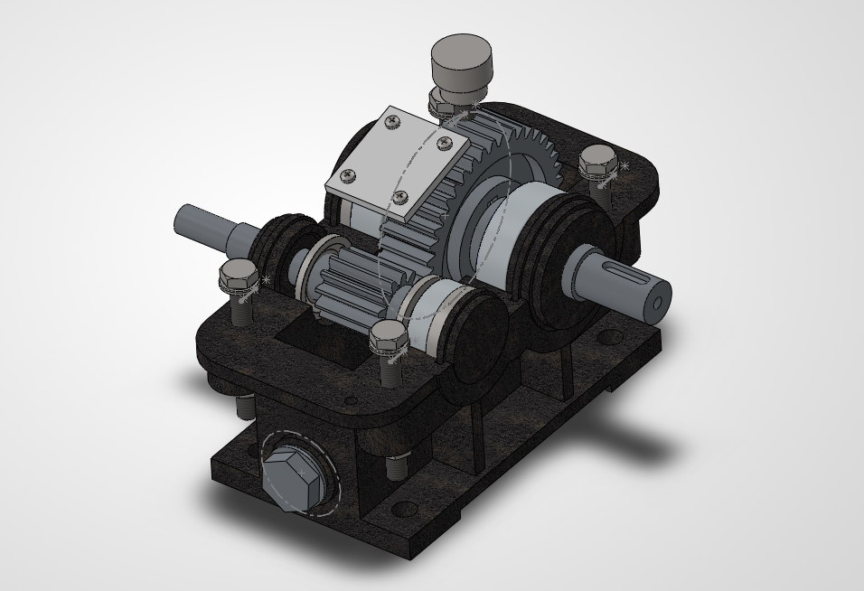

Add a SolidWorks render of the reducer
images/reducer-housing.png
images/reducer-housing.png

Single-stage gear reducer
A self-directed project: a complete single-stage gear reducer modeled in SolidWorks. I started with the housing, as a separate base and cover (195 × 137 × 97 mm), then built it up into a full assembly with the shafts, gears, end covers, bolts, inspection window plate, and drain plug.
- Built the housing with 38 solid features in total (20 in the base, 18 in the cover), including two bearing bores (Ø53 mm and Ø70 mm) set 123.3 mm apart.
- Designed the cover inside the assembly, referencing the base's sketches, so the mating flanges and the four M8 bolt holes line up between the two parts. I checked the fit with mates in the assembly.
- Added 6 mm stiffening ribs (mirrored to the other side), an M18 threaded drain port in the base, and four M3 holes in the cover for an inspection window plate.
- In progress: I am now running a finite element analysis (FEA) on the reducer. I will add the setup and results here when it is done.
DateJul to Nov 2026
ToolsSolidWorks
ScopeHousing, shafts, gears, full assembly
TypeSelf-directed project